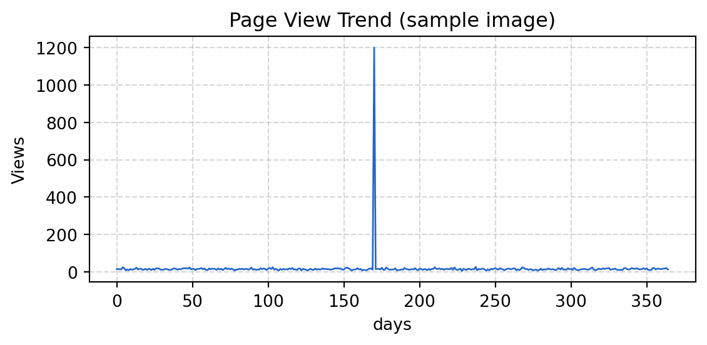

Webから材料を仕入れる
道具から材料へ
ここからは「材料」
Webへアクセス（requests）
requests.get(url) で 指定URLにアクセスresponse を print すると 状態コード が見える200 とは？
| コード | 意味 | 説明 | 対処法 |
|---|---|---|---|
| 200 | OK | 正常にデータを取得できた | そのまま処理を続行 |
| 404 | Not Found | URLや記事が存在しない | URL・記事名を確認 |
| 500 | Internal Server Error | サーバ側でエラー | 時間をおいて再試行 |
| 501 | Not Implemented | 機能が未対応 | パラメータを確認 |
| プロパティ | 型 | 説明 |
|---|---|---|
.text |
str |
本文を文字列で取得 |
.json() |
dict |
本文がJSONなら dict として取得 |
.headers |
dict風 | ヘッダーを辞書風に取得 |
Wikipedia の統計APIに触れる
metro-cit.ac.jp/lesson を使うヘッダーなしだと
.dict() ではなく .json() なのか.json() はAPIが返すデータを dict として受け取る メソッド.json() は このテキストを dict に変換 するメソッドjson で同じことができる普段は .json() でOK
requests が内部でやってくれているだけAPIとエンドポイントの構造
https://wikimedia.org/api/ 配下が API/metrics/pageviews/top/... がエンドポイントのひとつ| パラメータ | 例の値 | 意味 | 他の選択肢 |
|---|---|---|---|
| プロジェクト | ja.wikipedia | 日本語Wikipedia | en.wikipedia, commons.wikimedia など |
| アクセス方法 | all-access | 全アクセス | desktop, mobile-app, mobile-web |
| 日付 | 2025/06/27 | 指定日 | YYYY/MM/DD の任意の日付 |
覚える必要はない
個別ページのアクセス推移を取る
| パラメータ | 必須 | 選択肢 |
|---|---|---|
| project | ✓ | ja.wikipedia など |
| access | ✓ | all-access / desktop / mobile-app / mobile-web |
| agent | ✓ | all-agents / user / spider / automated |
| article | ✓ | 任意の記事名（スペースは _） |
| granularity | ✓ | daily / monthly |
| start | ✓ | YYYYMMDD |
| end | ✓ | YYYYMMDD |
import requests
import numpy as np
url = ("https://wikimedia.org/api/rest_v1/metrics/pageviews/per-article/"
"ja.wikipedia/all-access/user/"
"東京都立産業技術高等専門学校/daily/20240401/20250328")
headers = {'User-Agent': 'metro-cit.ac.jp/lesson'}
response = requests.get(url, headers=headers)
data = response.json()
# data['items'] は list of dict
views = np.array([item['views'] for item in data['items']])
dates = np.array([item['timestamp'] for item in data['items']])
max_i = np.argmax(views)
min_i = np.argmin(views)
print(f"最大: {views[max_i]}回 {dates[max_i]}")
print(f"最小: {views[min_i]}回 {dates[min_i]}")
print(f"平均: {np.mean(views):.1f}回")
print(f"分散: {np.var(views):.1f}")data['items'] は list of dict（dict章 でやった形）np.array() で ndarray 化（numpy章）np.mean / np.var で統計量np.argmax / argmin は インデックス を返す（値ではない点に注意）値もインデックスも両方欲しいとき
max_i = np.argmax(views) で index を得てからviews[max_i] で値、dates[max_i] で対応する日付plt.plot(views) するだけ
import requests
import matplotlib.pyplot as plt
import numpy as np
url = ("https://wikimedia.org/api/rest_v1/metrics/pageviews/per-article/"
"ja.wikipedia/all-access/user/"
"東京都立産業技術高等専門学校/daily/20240401/20250328")
headers = {'User-Agent': 'metro-cit.ac.jp/lesson'}
response = requests.get(url, headers=headers)
data = response.json()
views = np.array([item['views'] for item in data['items']])
plt.plot(views)
plt.title('Page View Trend')
plt.xlabel('days')
plt.ylabel('Views')
plt.show()
print(f"Max: {np.max(views)}")
print(f"Min: {np.min(views)}")
print(f"Mean: {np.mean(views):.1f}")
print(f"Var: {np.var(views):.1f}")1日だけ突出している
| やりたいこと | コード |
|---|---|
| アクセス | requests.get(url, headers=...) |
| 状態確認 | response.status_code（200 = OK） |
| 本文(str) | response.text |
| JSON → dict | response.json() |
| ヘッダー | response.headers |
| User-Agent | headers={'User-Agent': '...'} |
| 値の集計 | np.array([d['views'] for d in items]) → mean/var/argmax |
for / items() / np.array() で処理できる演習
access を desktop と mobile-web に切り替えるヒント
views_desktop と views_mobile_web に分けて入れるheaders を使い回せるviews_desktop と views_mobile_web を 同じグラフに重ねるplt.plot() を 2回呼ぶだけやってはいけない
import requests
import matplotlib.pyplot as plt
import numpy as np
headers = {'User-Agent': 'metro-cit.ac.jp/lesson'}
article = "東京都立産業技術高等専門学校"
base = ("https://wikimedia.org/api/rest_v1/metrics/pageviews/per-article/"
f"ja.wikipedia/{{access}}/user/{article}/daily/20240401/20250328")
def fetch_views(access):
url = base.format(access=access)
data = requests.get(url, headers=headers).json()
return np.array([item['views'] for item in data['items']])
views_desktop = fetch_views("desktop")
views_mobile_web = fetch_views("mobile-web")
plt.plot(views_desktop, label="desktop")
plt.plot(views_mobile_web, label="mobile-web")
plt.legend()
title = (f"max={max(views_desktop.max(), views_mobile_web.max())} "
f"min={min(views_desktop.min(), views_mobile_web.min())} "
f"mean={(views_desktop.mean() + views_mobile_web.mean()) / 2:.1f}")
plt.title(title)
plt.xlabel("days"); plt.ylabel("Views")
plt.show()付録
| ブラウザ | User-Agent |
|---|---|
| Chrome (Windows) | Mozilla/5.0 (Windows NT 10.0; Win64; x64) ... Chrome/119.0.0.0 Safari/537.36 |
| Chrome (Mac) | Mozilla/5.0 (Macintosh; Intel Mac OS X 10_15_7) ... Chrome/119.0.0.0 Safari/537.36 |
| iOS Safari (iPhone) | Mozilla/5.0 (iPhone; CPU iPhone OS 17_1 like Mac OS X) ... Mobile/15E148 Safari/604.1 |
| iOS Safari (iPad) | Mozilla/5.0 (iPad; CPU OS 17_1 like Mac OS X) ... Mobile/15E148 Safari/604. |
requests で アクセス、.text / .json() / .headers で 取り出す